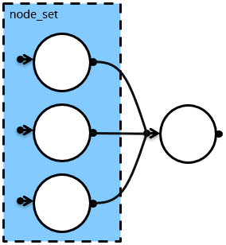
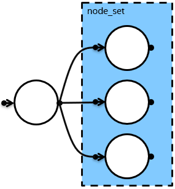

make_edges creates edges between a single node and each node from a set of nodes.
The feature requires C++11.
template <typename NodeType> void make_edges(implementation-defined-type& node_set, NodeType& node); // node_set is an object returned from make_node_set function. template <typename NodeType> void make_edges(NodeType& node, implementation-defined-type& node_set); // node_set is an object returned from make_node_set function.
#define TBB_PREVIEW_FLOW_GRAPH_FEATURES 1 #include "tbb/flow_graph.h"
There are two ways to connect nodes from a set and a single node using make_edges, they are shown in the table below.
make_edges(node_set, node) |
make_edges(node, node_set) |
|---|---|
|
 |
 |
The example implements the graph stucture shown in the picture below.
#define TBB_PREVIEW_FLOW_GRAPH_FEATURES 1
#include "tbb/flow_graph.h"
int main() {
using namespace tbb::flow;
graph g;
broadcast_node<int> input(g);
function_node doubler(g, unlimited, [](const int& v) { return 2*v; });
function_node squarer(g, unlimited, [](const int& v) { return v*v; });
function_node cuber(g, unlimited, [](const int& v) { return v*v*v; });
buffer_node<int> buffer(g);
auto handlers = make_node_set(doubler, squarer, cuber);
make_edges(input, handlers);
make_edges(handlers, buffer);
for(int i = 1; i <= 10; ++i) {
input.try_put(i);
}
g.wait_for_all();
}